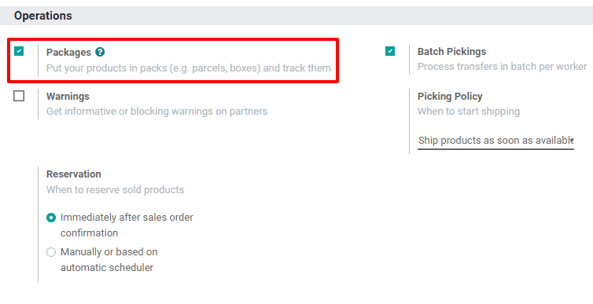
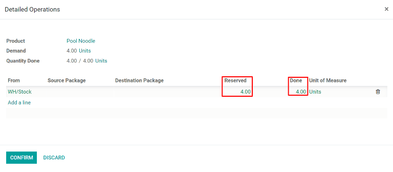
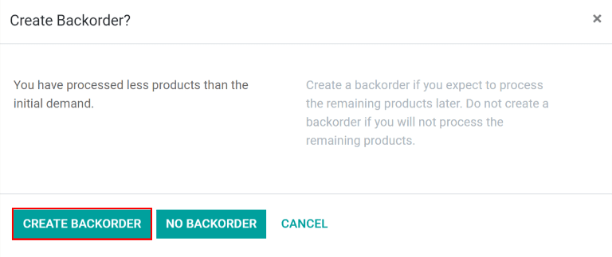

Multi-package shipments¶
In some cases, a delivery order with multiple items may need to be shipped in more than one package. This may be necessary if the items are too large to ship in a single package, or if certain items cannot be packaged together. Shipping a single delivery order in multiple packages provides flexibility for how each item is packaged, without the need to create multiple delivery orders.
Configuration¶
In order to split a delivery order across multiple packages, the Packages setting must be enabled. To do so, navigate to , then enable the checkbox next to Packages. Click Save to confirm the change.
Ship items in multiple packages¶
To split items in the same delivery order across multiple packages, begin by navigating to , then select a delivery order that has multiple items, a multiple quantity of the same item, or both.
On the Operations tab, select the ⁞≣ (menu) icon in the line of the product that will be shipped in the first package.
This makes a Detailed Operations pop-up window appear. In the table at the bottom of the pop-up window, the Reserved column shows the total quantity of the product included in the delivery order.
If the full quantity will be shipped in the first package, enter the number from the Done column in the Reserved column. If less than the full quantity will be shipped in the first package, enter a smaller number than the one that appears in the Reserved column. Click Confirm to confirm the Done quantities and close the pop-up.
Repeat the same steps for every item quantity that is included in the first package. Then, click Put In Pack to create a package with all of the selected items.

For the next package, follow the same steps as detailed above, marking the quantity of each item to be included in the package as Done before clicking Put In Pack on the delivery order. Continue doing so until the full quantity of all items are added to a package.
Finally, after all of the packages have been shipped, click Validate to confirm that the delivery order has been completed.
Tip
After one or more packages are created, a Packages smart button appears in the top-right corner of the delivery order. Click the Packages smart button to go to the Packages page for the delivery order, where each package can be selected to view all of the items included in it.

Create a backorder for items to be shipped later¶
If some items will be shipped at a later date than others, there is no need to put them in a package until they are ready to be shipped. Instead, create a backorder for the items being shipped later.
Begin by shipping the items that will be shipped immediately. If they will be shipped in multiple packages, follow the steps above to package them as required. If they will be shipped in a single package, simply mark in the Done column the quantity of each item being shipped, but do not click the Put In Pack button.
After all quantities being shipped immediately are marked as Done, click the Validate button, and a Create Backorder? pop-up window appears. Then, click the Create Backorder button. Doing so confirms the items being shipped immediately and creates a new delivery order for the items that will be shipped later.
The backorder delivery order will be listed in the chatter of the original delivery order in a message that reads The backorder WH/OUT/XXXXX has been created.. Click on WH/OUT/XXXXX in the message to view the backorder delivery order.

The backorder delivery order can also be accessed by navigating to , clicking the # Back Orders button on the Delivery Orders card, and selecting the delivery order.

Once the remaining items are ready to be shipped, navigate to the backorder delivery order. The items can be shipped in a single package by clicking Validate and selecting Apply on the Immediate Transfer? pop-up window that appears, or shipped in multiple packages by following the steps detailed in the section above.
It is also possible to ship out some of the items while creating another backorder for the rest. To do so, simply follow the same steps used to create the first backorder.